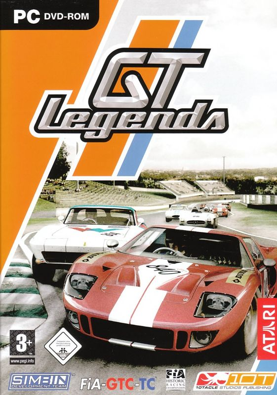

Play date: 2012
Publisher: 10tacle
Developer: SimBin
Memo: -
Description: Racing enthusiasts .. start your engines! Play a GT Legends Single Player game or Multi-player online against world-wide opponents. There are over 90 legendary automobiles available in the game - Fords, Chevys, Shelbys, Cobras, Alfas, Austin Healeys, BMWs, Jags, Ferraris, Mercedes, Porsches, Renaults, Minis, Fiats, Lotus to name a few. Which exotics can be added to your garage at any given point depends upon how many races you have won. Many cars can be purchased with your winnings (credits) while others can only be won.